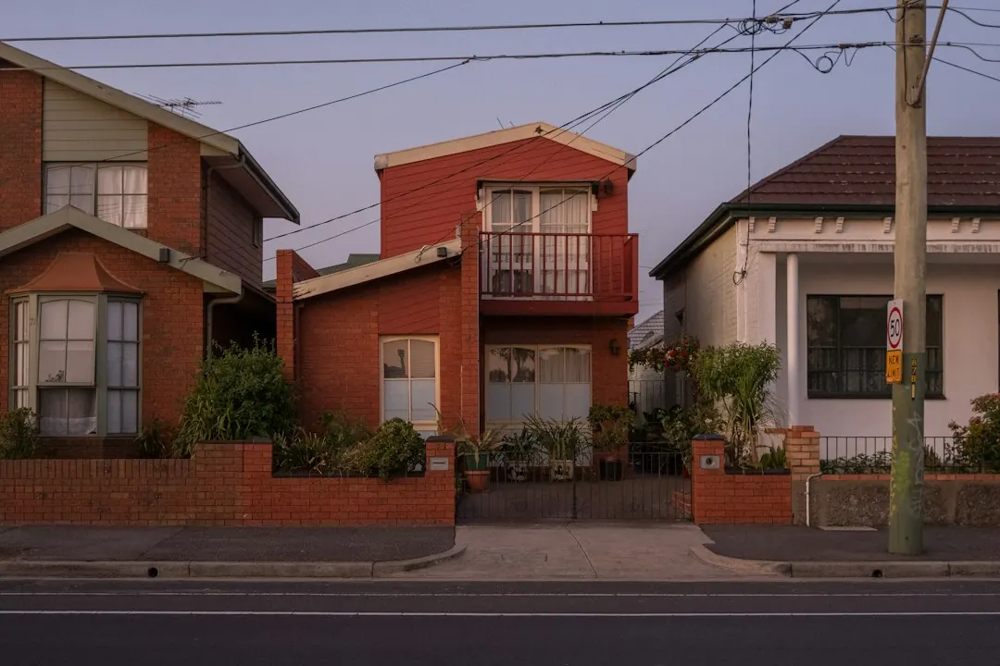

Common repair pricing is listed at $120 to $200 for a service call-out, $220 to $450 for a torsion spring replacement, $180 to $320 for a lifting cable, $160 to $300 for track rollers, and $600 to $1,100 for an opener or motor. A new single sectional door is listed at $2,500 to $5,000 supplied and installed. Final pricing depends on door type, condition, access and after-hours charges, so request a written fixed-price quote.
For households comparing garage door repairs brisbane options, the useful starting point is to identify the door type, describe the fault clearly and compare the written quote with the likely parts involved.
Garage Door Repairs Brisbane Explained
Southside Garage Doors describes repairs for sectional, roller and tilt doors, with common faults including broken springs, worn lifting cables, failed openers, jammed roller doors and off-track sectional doors. The description you provide at enquiry stage should identify both the door style and the visible problem.
A door that will not secure is treated as an emergency call-out category in the published service list. Other jobs may involve panel or section replacement, remote and keypad programming, cable and roller replacement, or a broader service. Clear details help the technician prepare for the right type of inspection.
- Note whether the door is sectional, roller or tilt.
- Describe whether it is jammed, off-track, noisy, unresponsive or unable to close.
- Include the suburb or postcode and any useful access information.
How the local quote process works
The published process has three stages. First, the homeowner sends the door type and fault through the enquiry form. Next, a qualified local garage door technician discusses the problem and arranges a suitable visit time. Finally, the attending technician inspects the door, explains the proposed fix and provides a written fixed-price quote before work begins.
That sequence gives the homeowner a defined point at which to ask questions about parts, labour, the scope of the repair and whether replacement is more appropriate than adjustment. Price guidance is presented for planning, but the attending technician supplies the actual written quote. The published description also says the homeowner deals directly with that technician.
Before approving the work, ask what component has failed, whether the quoted amount includes removal or replacement of associated hardware, and whether any after-hours surcharge applies.
Reading the 2026 repair price guide
The listed figures are general Brisbane guidance rather than binding offers. A service call-out or standard service is shown at $120 to $200. Torsion spring replacement is listed at $220 to $450, lifting cable replacement at $180 to $320, and track roller replacement at $160 to $300.
For powered doors, opener or motor replacement is listed at $600 to $1,100. A new single sectional door, supplied and installed, is shown at $2,500 to $5,000. The published explanation identifies door type and size, spring and hardware condition, opener brand, site access and after-hours surcharges as factors that can change the final amount.
Use the ranges to prepare questions, not to assume a final bill. A written fixed-price quote should state the proposed work clearly before any repair is approved.
Electrical work and responsibility
Powered opener faults can involve more than mechanical adjustment. The published service information states that where a powered opener needs mains electrical work, that part is carried out by a licensed electrician under Queensland law. Ask which parts of the proposed job are mechanical and which require electrical work.
This distinction is useful when comparing quotes. A motor replacement, remote programming or track adjustment may be described separately from mains electrical work. The quote should make the scope understandable, including whether the issue is the opener, the door hardware, the power supply or a combination of these.
For a wider replacement decision, ask about the proposed door type, supplied components, installation scope and any workmanship warranty offered by the contractor. Those details are not established by the general price guide and should be confirmed in writing.
Southside coverage and practical checks
The listed service area includes Tarragindi, Camp Hill, Holland Park, Coorparoo, Carindale, Mount Gravatt, Wishart, Greenslopes, Holland Park West, Mount Gravatt East, Upper Mount Gravatt, Mansfield, Sunnybank, Cannon Hill and Carina, along with surrounding Brisbane Southside neighbourhoods. Locality matters most when access, callback timing or the type of residential door affects the visit.
When requesting a quote, provide the exact suburb, door type, fault description and preferred callback period. The form lists morning, midday, afternoon and Saturday morning options. If the issue concerns a spring, cable, roller, opener or track, say so only if that component is visibly identified or already discussed with a technician.
For a narrower look at spring-related faults, see this guide to garage door spring repairs in Brisbane. It is useful when the door problem appears connected to a spring rather than the opener or track.
- Describe the door. State whether it is sectional, roller or tilt and explain the visible fault.
- Request the callback. Provide the suburb or postcode, access details and a suitable time to discuss the problem.
- Review the inspection. Ask which component has failed and whether the proposed work is repair, replacement or adjustment.
- Approve in writing. Check the written fixed-price quote and scope before authorising the work.
| Job | Listed range | What can affect the final quote |
|---|---|---|
| Service call-out or standard service | $120 to $200 | Fault scope, access and service requirements |
| Torsion spring replacement | $220 to $450 | Spring and hardware condition |
| Lifting cable replacement | $180 to $320 | Door type and associated hardware |
| Track roller replacement | $160 to $300 | Door type, track condition and access |
| Opener or motor replacement | $600 to $1,100 | Opener brand and electrical scope |
| New single sectional door | $2,500 to $5,000 supplied and installed | Door size, installation scope and site access |
Common questions
How much can a garage door repair cost in Brisbane? The published guide lists $120 to $200 for a service call-out, $220 to $450 for torsion spring replacement, $180 to $320 for a lifting cable, $160 to $300 for track rollers, and $600 to $1,100 for an opener or motor replacement.
Is a written quote provided before work starts? Yes. The described process says the attending technician inspects the door, explains the fix and provides a written fixed-price quote before work begins.
Can a powered opener involve electrical work? Yes. The published information says mains electrical work for a powered opener is carried out by a licensed electrician under Queensland law. Ask the technician to separate mechanical and electrical parts of the scope.
Does the published information promise same-day completion? It describes a prompt response and emergency call-outs, but it does not promise that every repair will be completed on the same day.
This guide covers common residential door faults, Brisbane Southside coverage, published price ranges and questions to ask before approving work.